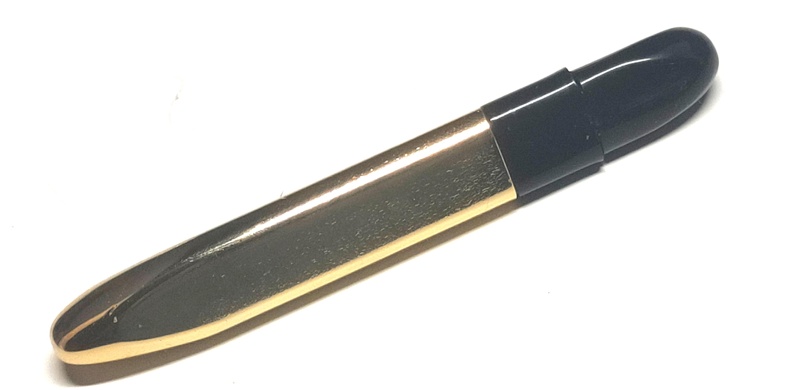
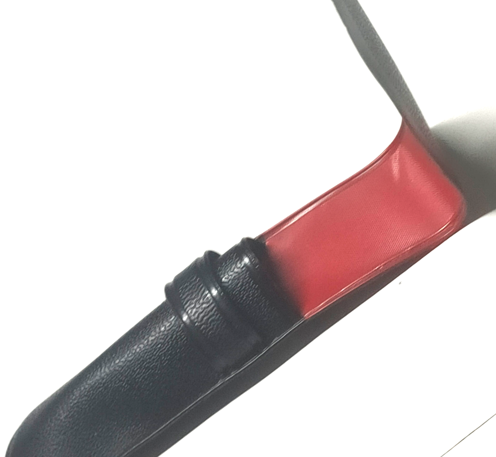
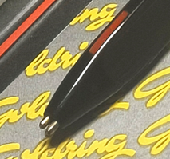
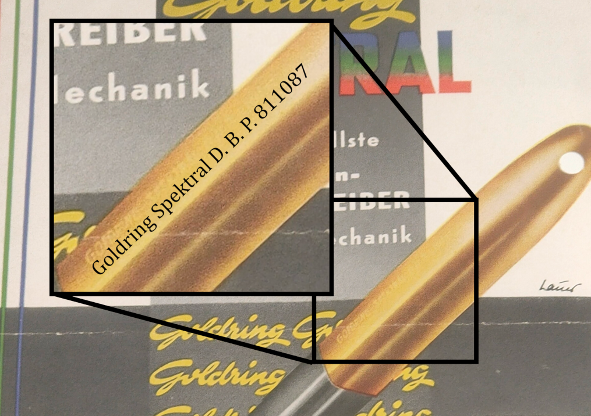
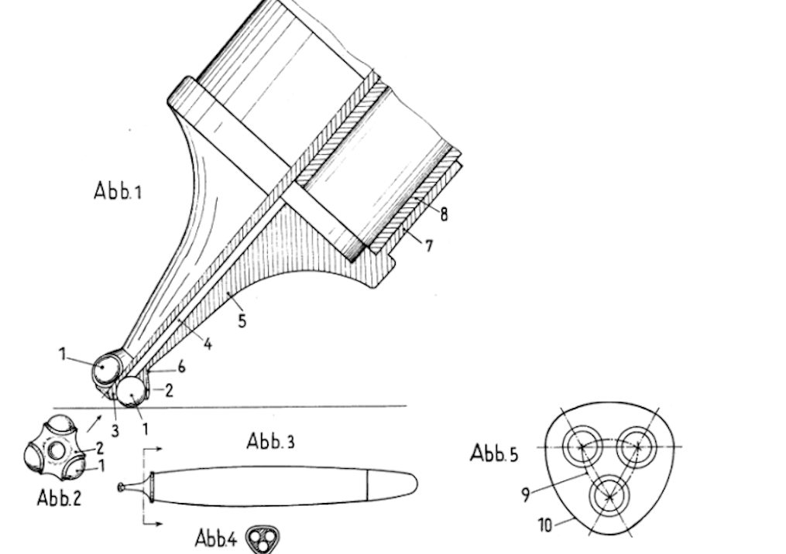

Goldring
Kurt Lobstädt
Stand: 24.05.2026
Goldring war ein von 1934 bis 1999 bestehender deutscher feinmechanischer Betrieb und Schreibgerätehersteller. Zuletzt besaß man die Internet-Domain goldring.net.
1934 bei Leipzig von Kurt Lobstädt als feinmechanische Werkstatt gegründet, wechselte man ab 1945 nach dem Wiederaufbau zur Schreibgeräteherstellungen.
Hergestellt wurden Füllfederhalter, mechanische Bleistifte und Kugelschreiber.
Goldring zog 1951 nach Horb, 1952 nach Bühl um. Ab 1951 war Goldring als Goldring-Werk Kurt Lobstäd GmbH bekannt.
Das wohl bekannteste Produkt von Goldring ist der Stempel-Kugelschreiber - Ein Kugelschreiber, dessen Hinterteil zu einem Stempel mit Stempelkissen auffaltbar und zusammensteckbar war.
"Goldring Spektral" Dreifarb-Kugelschreiber
Der "Goldring Spektral" ist ein Kugelschreiber mit drei gleichzeitig hervorzeigenden Kugelschreiberminen, die in einem gleichwinkligem Dreieck angeordnet sind.Zuvor war eine solche Konstellation nur bei mehrfarbigen Füllfederhaltern möglich gewesen, da diese sich wie Kugelschreiberminen natürlich nicht durchs Schreiben verkürzen.
Er wurde Anfang der 1950er Jahre in Deutschland hergestellt und stellt die verbesserte Version des Flo-Ball Tri-Tone aus den USA dar.



Der Anwendungszweck war das mehrlinige Schreiben (z.B. für Unterstreichungen oder zur Dekoration) und allgemeiner das schnelle und mühelose Farbwechseln durch einfaches Rollen des Kugelschreibers in der Schreibhand.

Im Unterschied zum Flo-Ball Tri-Tone besaß er:
- keine ins Kunststoff geprägte Schrift
- ein kürzeres Hinterstück
- eine Messinghülse im Hinterstück gegen Verschleiß
- leicht andere, ebenfalls 8cm lange Minen (Schmidt-Mine 706)
- kürzere Farb-Indikatorstriche
- die Minen federn nach hinten mehr auseinander (unklar ob nur Verschleiß)


Die Werbung des Goldring zeigt den längeren Indikatorstrich, vielleicht verkürzte man ihn erst während der Produktion.


Ein sehr interessantes Detail der Werbung ist die Aufschrift auf den Stift: "811087".
Dieses Patent DE811087 ist von Hans Molly aus Deutschland, Pforzheim, angemeldet 3.6.1949. Es ähnelt dem Spektral nur wenig.


Das offensichtlich passendere Patent zum Flo-Ball Tri-Tone wurde knapp 2 Monate früher angemeldet (US2608953, Paul Kollsman, 12.4.1949).
Welchen Vorteil gab die Werbung mit dem deutschen Patent von Molly?


Inspiration für den Tri-Tone (und damit auch den Spektral) war US2449939, ebenfalls von 1949.
Spätere Stifte dieser Art waren z.B.:
1960: FR1251499
1976: DE2643599
1978: DE7721558
Wie anfangs erwähnt hatten vor Kugelschreibern in der Natur der Sache nur Füllfederhalter eine solche Schreibspitzen-Anordnung.
Ein paar habe ich in meinem Artikel zu mehrfarbigen Füllfederhaltern aufgelistet: In der Tabelle bei Federanzahl '> 1' und Mechanismus 'keiner'.
Wenn Sie meine Recherchearbeit unterstützen wollen, würde ich mich über eine Nachricht per E-Mail freuen: wechselstift@gmail.com.